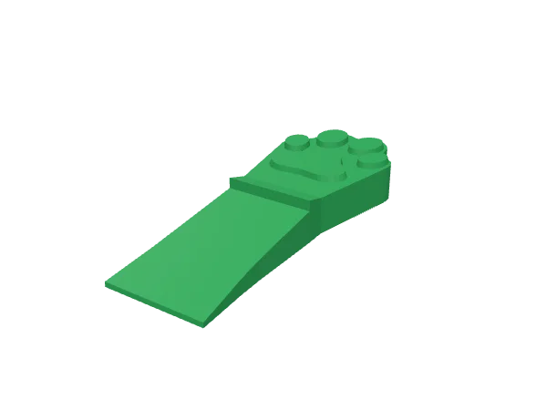
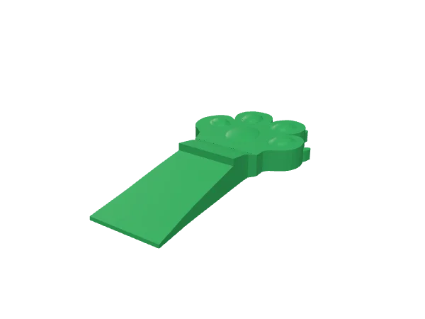
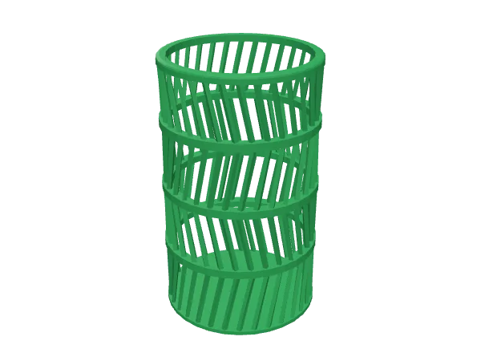
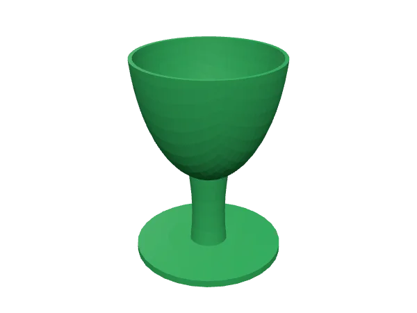
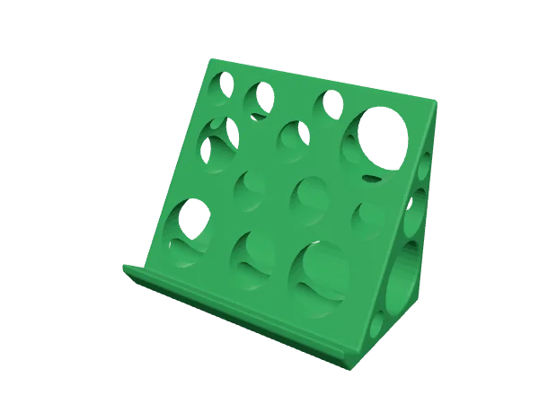
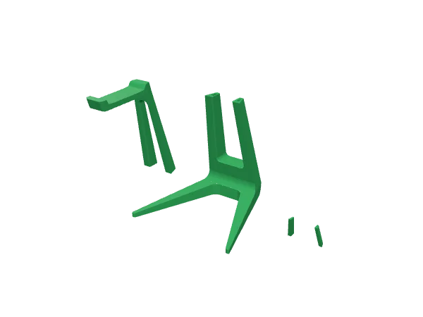
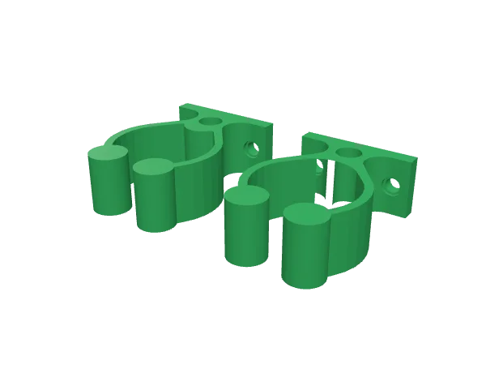

English · Português
Modelos do BamboLens
Modelos 3D grátis, feitos pelo criador do BamboLens.
No portal do BamboLens, toque em Baixar: a peça vai direto para a sua mesa, em tamanho real.






Suporte para fones de ouvido
2 peças + pino · 27 cm de altura montado · feito para impressoras pequenas (140 mm) · ZIP
Baixar
Licença: uso pessoal, grátis
Você pode baixar e imprimir estes modelos para uso próprio, à vontade. Vender os arquivos ou as peças impressas, ou publicar os arquivos em outro lugar, exige autorização por escrito do autor: legal@bambohouse.com.